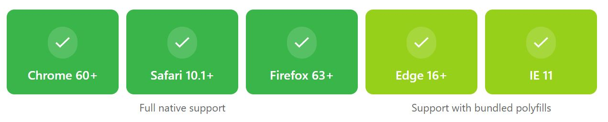

Web-Komponenten mit Stencil
Dominic Zettl
Agenda
- Was sind Web-Komponenten ?
- Was ist Stencil ?
- Warum Stencil ?
- Stencil API
- Live Coding
- Zusammenfassung
Was sind Web-Komponenten ?
- Erstellung von benutzerdefinierten HTML Elemente
- Verwendung von Shadow DOM
Shadow DOM
- Funktionalität ist gekapselt und vom anderem Code vollständig getrennt
- Styles haben keine Auswirkung auf Komponenten außerhalb
Was ist Stencil ?
- Compiler für Web-Komponenten
- Basiert auf TypeScript und verwendet JSX
- Open Source
- Entwickelt von Ionic
Warum Stencil ?
- Unterstützt alle gängigen Browser
- Einfache API zur Erstellung von Web-Komponenten
Stencil API
- Lifecycle Hooks: Lebenszyklus Events einer Komponente
- Dekoratoren: Eigenschaften einer Komponente
Dekoratoren - @Component
@Component({
tag: 'st-button',
styleUrl: 'st-button.less'
})
export class StButton {
}
- Deklariert die Web-Komponente <st-button>
Dekoratoren - @Prop
import { Prop } from '@stencil/core';
export class StButton {
@Prop() color: string;
@Prop() icon: string;
@Prop() label: string;
}- Deklariert ein Property oder Attribut
Dekoratoren - @State
export class StToggleButton {
@State() open: boolean;
@Listen('click', { capture: true })
handleClick() {
this.open = !this.open;
}
render() {
return ;
}
}- Interner Status einer Komponente
Dekoratoren - @Method
import { Method } from '@stencil/core';
export class StPopUp {
@Method()
async open() {
// show the popup
}
@Method()
async close() {
// close the popup
}
}- Methode die man über Referenz zur Komponente aufrufen kann
Dekoratoren - @Event
import { Event, EventEmitter } from '@stencil/core';
...
export class TodoList {
@Event() todoCompleted: EventEmitter;
todoCompletedHandler(todo: Todo) {
this.todoCompleted.emit(todo);
}
}- DOM Event welches die Komponente feuert

Live Coding
Zusammenfassung
- Compiler zur Generierung von gekapselten Web Komponenten
- Komponenten mit Präfix benennen
- Komponenten verwendbar in unterschiedlichen Frontend Frameworks
- Hilfreich zur Erstellung einer unternehmensinternen Komponenten-Bibliothek
Ende
Vielen Dank für die Aufmerksamkeit